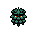
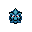

Pokédex / #204

Pineco #204
Bug
It hangs and waits for flying insect prey to come near. It does not move about much on its own.
Generation 2 · Johto

Stats
| Attack | 65 | |
|---|---|---|
| Defense | 90 | |
| Sp. Atk | 35 | |
| Sp. Def | 35 |
In the wild
| Wild level | 20–30 |
|---|---|
| HP | 50 |
| Experience | 7 |
| Egg groups | Bug |
Evolution
- Evolves into Forretress at level 35.
Moves
| Level | Move | Type | Category | Power | Energy | Cooldown | Effect | |
|---|---|---|---|---|---|---|---|---|
| 1 | Tackle | Normal | Physical | 15 | 15 | 1s | Tackle is one of the most common and basic moves a Pokemon learns. It deals damage with no additional effects. | |
| 5 | Bug Bite | Bug | Physical | 60 | 60 | 5s | Bug Bite deals damage and has no secondary effect. | |
| 10 | Protect | Normal | Status | – | 70 | 60s | Protect raises the user's Defense by two stages. | |
| 15 | Toxic Spikes | Poison | Status | 10 | 70 | 8s | Toxic Spikes deals damage and inflicts Poison, if the target already is Poisoned then inflicits Badly Poison. | |
| 20 | Take Down | Normal | Physical | 90 | 90 | 14s | Take Down deals damage and has no secondary effect. | |
| 25 | Selfdestruct | Normal | Physical | 200 | 80 | 120s | Resembling a weaker version of Explosion, Selfdestruct inflicts damage, and causes the user to faint. | |
| 30 | Struggle Bug | Bug | Special | 50 | 50 | 8s | While resisting, the user attacks the opposing Pokemon. This lowers the Sp. Atk stat of those hit. |
Field abilities
DigStrengthRock SmashHeadbutt
Special abilities
Sturdy
Egg moves
CounterDouble-EdgeEndureFlailPin MissilePower TrickRevengeSand TombStealth RockSwiftToxic Spikes
Technical machines
BideDefense CurlDouble EdgeDouble TeamEarthquakeExplosionGiga DrainHeadbuttLight ScreenMimicRageReflectRestRock SlideRock TombSandstormSolar BeamSubstituteToxic
Drops
| Item | Amount | Chance | |
|---|---|---|---|
| pot of moss mug | 1 | 19% | |
| acorn | 1 | 17.8% | |
| big mushroom | 1 | 13.3% | |
 | pineco doll | 1 | 0.1% |
| TM 54 | 1 | 0.005% | |
| Insect Plate | 1 | 0.002% |